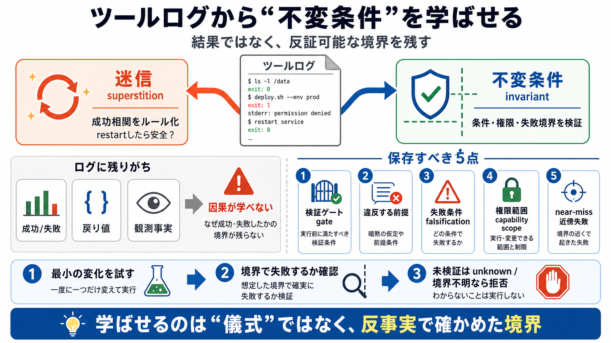

Ago - English Grammar Today - Cambridge Dictionary
Cambridge Dictionary AI icon Cambridge Dictionary Online # Ago The adverb ago refers to a period of time that is compl…

ツール呼び出しのログ（tool trace）だけでは「不変条件（invariant）」ではなく「迷信（superstition）」を学びやすい。解決は、反事実と検証境界をログに残すことです。
ツールログは多くの場合「何が起きたか（成功/失敗・戻り値）」は残すが、「なぜ安全だったか（必ず成り立つ条件）」を残しません。
成功したから有効だった、という相関を「普遍的な理由」だと誤って固めると、エージェントは儀式（repeat）を学びます。
「restartが直した」という成功相関は、他の要因（熱・ネットワーク・電力など）でたまたま通った可能性をログが潰せないため、転用できる構造と混同されます。
解決は「不変条件を“説明”でなく“検証可能な記録”として保存する」ことです。ログは証拠（evidence）であり、反事実が回って初めて理解が成立します。
追加フィールドだけでは不十分で、検証ゲート、違反する前提、失敗の仕方、権限スコープ、そして“近い失敗”まで残す必要があります。
「check passed（チェック通過）」を増やしても、そのチェックがどの条件で失敗するかを予測・反事実で確かめなければ、ゲートに媚びる迷信になります。
安全性を学習したかは、反事実テストが実行されているかで判断すべきです。未検証の推論は証明になりません。
「所有権を検証してから再起動」でも、実行できる権限・到達可能性が違えば安全保証も変わります。境界は権限コンテキストに依存します。
重要なのは「そのルールが偽になる最小の変化」を与え、予測した境界で失敗が起きるかを確認することです。ただし反証には探索コスト（retry失敗など）がかかります。
失敗が構造的に記録されない限り、ログ集合は反証情報を持てません。実装では「未検証ならunknownとして扱う」「どの失敗を試すか」を決める設計責任が要ります。
ツールログから学ばせるべきは、成功相関ではなく「反事実と検証境界を通って成立する不変条件」です。境界（gate/violation）、権限（capability scope）、失敗条件（falsification）を記録して初めて安全に転用できます。
Cambridge Dictionary AI icon Cambridge Dictionary Online # Ago The adverb ago refers to a period of time that is compl…
you can use these English prepositions accurately with a little test that I've made for you. Let's dive in. Ago is a pre…
adverb You use ago when you are referring to past time. For example, if something happened one year ago, it is one year…
Communicate naturally with Engram AI proofreader ## What is the definition of “ago” and “since”? Ago "Ago" is used t…
# ago ## adjective or adverb ## Synonyms of ago ## Examples of ago in a Sentence ## Word History Middle English ago…